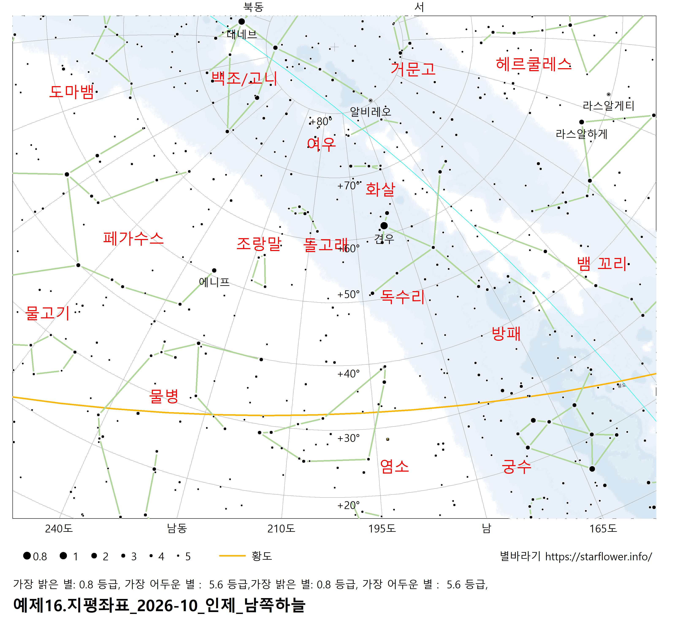
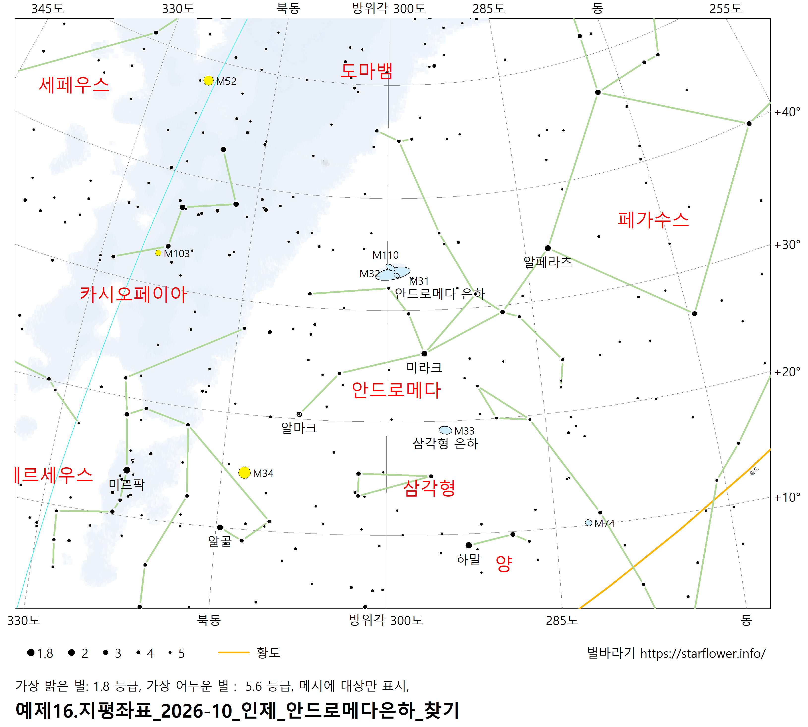

별바라기 홈 >
관측 기록 및 장소 리뷰 >
2026년 10월 강원도 인제군
날짜: 2026년 10월 08~09일
장소: 강원도 인제군
관측지 개요
- 나름 접근성이 좋다. 서울에서 2시간 20분 거리이다.
- 남북이 트이고, 동서 방향은 높은 산이 있다. 예를 들면, 오리온이 산의 능선과 수평인 모습으로 떠오른다.
- 하늘이 너무 좋다. 산이 있어 시야는 막히지만 광해를 막아준다.
- 특히, 오늘 하늘은 최고의 상태다. 구름 0, 시상 최고다. 이슬이 많이 내리는 것만 아쉬웠다.
- 암적응을 안해도 은하수가 바로 보이고, 안드로메다 은하, 이중 성단이 맨눈으로 보인다.
별자리 안시 관측
- 오랫만에 보는 염소를 보며 별자리를 익혔다.
- 남쪽 하늘에 황도를 따라 염소, 물병, 물고기 확인. 아래 왼쪽 그림처럼 고도 20도 이하는 안 보인다.
- 백조 아래의 여우, 화살도 잘 보이고, 옷걸이 성단도 맨눈으로 보인다. (쌍안경으로 본 것인지 잘 기억이 안남...ㅠ)
- 가을 미인 안드로메다와 바다 괴물 고래
|

|

|
|
염소/물병/물고기
|
안드로메다 은하 찾는 방법
|
안드로메다 은하
- 찾는 법 01: 페가수스 사각형의 왼쪽 별-애니프가 안드로메다 공주의 머리이고, 7시 방향으로 어깨 두 별, 계속해서 허리 미라크 별, 미라크 11시 방향으로 별 2개, 그 위에 은하가 있다.
- 찾는 법 02: 카시오페이아 중심 별에서 3시 방향으로 나아가면 페가수스 사각형의 애니프와 만난다. 이 선의 중간쯤에서 살짝 아래로 내리면 은하가 있다.
- 초보자도 맨눈으로 확인할 정도로 좋은 하늘이다. '보일락 말락 보였다'고 표현.
- 12인치에서 M32, M110도 쉽게 보였다.
- 은하가 너무 커서 시야를 가득 채우기에, 전체 모습을 볼 수 없었다.
- 다음에는 소형 망원경으로도 보고, 또, 돕소니안에서는 망원경을 이리 저리 흔들며 전체 크기를 느껴보고 싶다.
미라크의 유령 NGC 404
- 밝은 별 미라크의 옆에 바로 옆에 있지만, 쉽게 보인다.
- 기본정보: 렌즈형 은하 / 10.2 등급 / 각크기 3.4' X 3.3' / 거리 9.7백만광년
- 불규칙한 표면이 느껴진다. 예를 들면, 오른쪽으로 뚫려 있는 짧은 소리 굽쇠의 모앙인데, 위쪽은 밝고 크며, 아래쪽은 크기도 절반 정도이고 어둡다.
토성 (22:30분쯤)
- 적당히 기울어진 예쁜 고리와 3개의 위성이 확인된다.
- 테티스, 레아, 디오네를 본 것 같다. 타이탄도 분명히 보였을텐데, 멀리 있어서 토성의 위성으로 인지하지 못한 것 같다.
- 다음엔 좀 더 잘 보자. 앞쪽 고리가 위쪽인지 아래쪽인지, 위성의 위치도 좀 더 자세히 기록. 시간이 걸리더라고 기록하고 바로 별바라기 화면으로 확인하자. ㅜㅜ
- 참고: 별바라기 토성의 위성 화면 도움말
M15 구상 성단
- 38mm 접안렌즈에서 별의 분해가 크지 않다. 그래도 주변시로 분명하게 분해되는 별들이 있다.
- 13mm 접안렌즈에서 쉽게 별이 분해된다. 00님은 '와 대박~'이라며 멋지게 리액션 해주었다.
- 참고:
우리은하에서 구상 성단의 분포
오리온 대성운, M42
- 쌍안경으로도 뿌연 성운기가 보였음.
- 12인치 돕소니안: 엄청 잘 보였다 ^^, 양 날개를 펼친 모습은 언제봐도 아름답다. 성운의 명암이 매우 잘 구분되고, 입체감도 살짝 느껴진다.
- 38mm 접안렌즈에서도 트레피지움 4개가 분명이 분해되고, 총총한 별의 모습이 예쁘다.
- 트래피지움 위쪽 날개의 3개의 별도 특징적이다.
- 아래 참고 스케치보다 성운기가 2배 정도 넒게 보이고, 트래피지움이 암흑대의 끝 부분에 위치하는 모습이다. 즉, 암흑대가 더 깊게 들어간 모습이다.
- 참고: 오리온 대성운 스케치
- 참고: 전리수소영역 발광 성운 H II Region
M36, M37, M38
NGC 2158
- 38mm 접안렌즈에서도 몇 개의 별이 분해되고, 13mm에서는 성단 전체적으로 수십개의 별이 분해된다.
- 마치 구상 성단을 보는 것 같다. 둥근 성운기가 분명히 보이고, 주변시 및 배율을 높이면 별이 분해된다.
구상 성단과 달리 성단 전체적으로 고르게 별들이 분포한다.
관측 장비
- 8x42 쌍안경
- 남's 돕 12" F/?? 초점거리: 1905mm
- 접안렌즈: 38mm, 13mm, 9mm
- 육안한계등급: 6 ?
- 어둡기: 3
- 투명도: 2~3. 지평선이 산에 가려져 있다^^
- 시상: 1~2
- 자정이 넘어가며 이슬이 많이 내림
관측 후기
- 인제의 하늘이 이렇게 좋은 줄 몰랐다.
- 휴가를 내고 별 하늘을 찾아 온 보람이 있다.
별바라기 홈 > 관측 기록 및 장소 리뷰 >
최종 변경: 2026-10-18